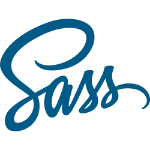
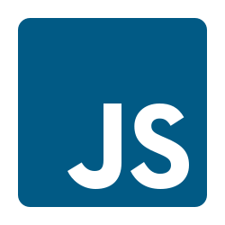
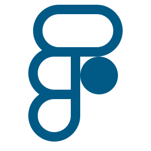

Profile
− 私について −
作業環境
- PC：
- Mac OS
- エディタ：
- Visual Studio Code
- コンパイル：
- Live Sass Compiler
- FTP：
- FileZilla
- デザイン・書き出し：
- Xd / Figma
- 画像編集：
- Photoshop
- ローカル開発環境：
- Local by Flywheel
資格
- Microsoft Office Specialist Excel 365&2019
- Microsoft Office Specialist Word 2016
スキル
-
HTML
-
CSS
-
 Sass(SCSS)
-
Bootstrap
-
 JavaScript
-
jQuery
-
PHP
-
WordPress
-
-
Sourcetree
-
Photoshop
-
Xd
-
 Figma
-
Word
-
Excel
経歴
- 2008年
- 工業高校卒業後、地元の製造業に就職し工場勤務。
主に工作機械のオペレーター業務を担当し、空気圧制御機器の部品を加工。一時期は切削工具の管理と兼務し書類作成業務を行う。
リーマンショック回復後からは３交代勤務で主力製品の生産に携わる。 - 2018年
- 次第に今後の働き方を考えるようになる。
年齢的な不安はあるものの、興味のある分野に挑戦したい気持ちが強く、一念発起しWeb制作の道へ。
始めにPCスキルを身につけるためにタイピング練習を開始。 - 2019年
- 交代勤務を続けながら平日は30分〜１時間、休日は３時間の独学。
HTML / CSSをProgate、ドットインストールで独学し、初めての言語に難しさを痛感した反面、思い通りの結果が表示させられた時の喜びを実感。
学習環境と転職先を考慮し、仙台に拠点を移す事を決意。
10月に前職を退職後、プログラミングスクールに通う。 - 2020年
- プログラミングスクール以外にも学習の幅を広げる。
アロキャンへの参加、デイトラ 、クリ★スタ、忍者CODEなどの教材に取り組みながらポートフォリオの作成に取り掛かりました。
７月：ポートフォリオ作成と並行して転職活動開始。
９月：ココナラで初のコーディング案件(LP)を獲得。
一緒に働かせて頂ける仙台のWeb制作会社を探しております！！
転職先決まりました！！
10月：地元のWeb制作会社で就業開始。
これからの事